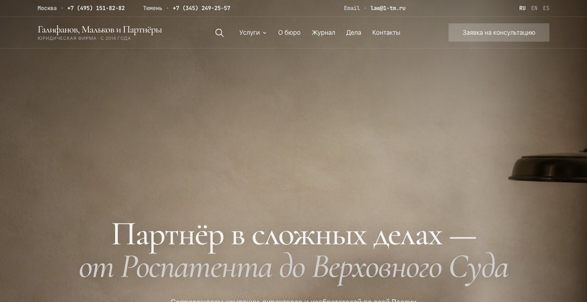
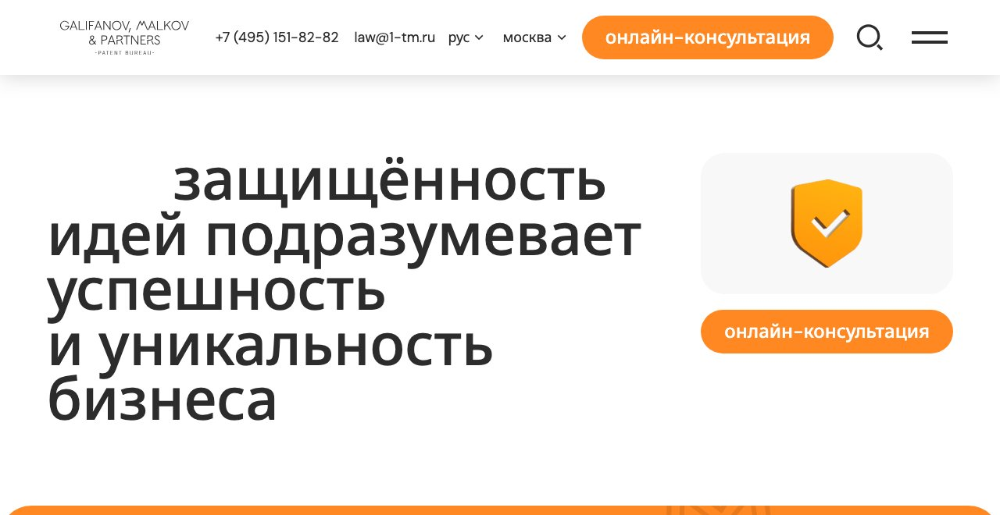
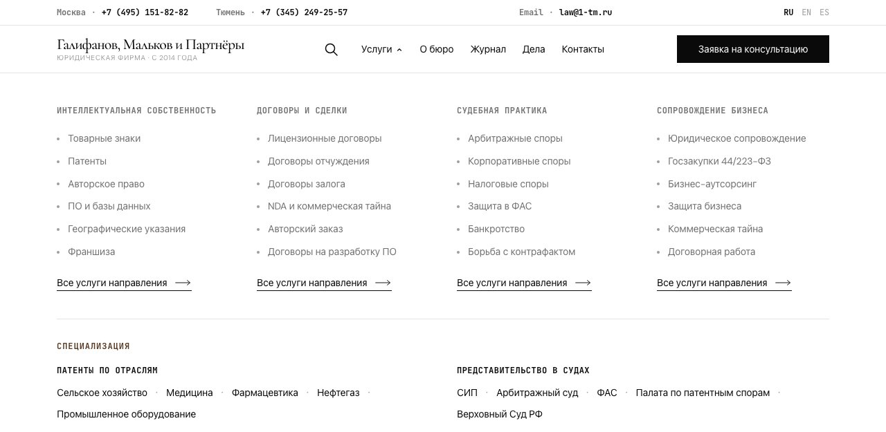
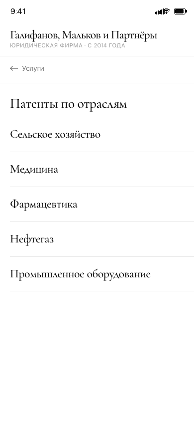

Galifanov, Malkov & Partners — information architecture and a design system
Static handoff, mid-build — passed to the client's WordPress developer. Preview: live demo.
Patent and law firm, Moscow and Tyumen offices, in business since 2014. The old site positioned the firm narrowly, as a "Federal Patent Bureau" — intellectual property only. The practice had since grown into a full-service firm — tax, corporate disputes, bankruptcy, government procurement, antitrust defense, business outsourcing — and the site hadn't caught up: 18 services, flat, no grouping.
Deliverable: a full set of static HTML/CSS/JS page templates, no framework or build step, self-contained files pulling shared assets — built to be handed to a WordPress developer who implements the CMS layer separately. 18 templates cover the whole site; about 80 individual service pages get generated from one of them once the client's content team fills in copy.


18 services, one list → 4 directions
The old site's service menu was a single ungrouped list. Proposed a 4-direction structure and mapped all 18 existing services into it — nothing dropped, unlike Litera where two categories got cut outright:
| Direction | URL | Groups it covers |
|---|---|---|
| Intellectual Property | /uslugi/intellektualnaya-sobstvennost/ |
Trademarks, Patents, Copyright, Software & databases, Geographical indications, Appellations of origin, Franchise |
| Contracts & Deals | /uslugi/dogovory-i-sdelki/ |
License agreements, Assignment agreements, Pledge agreements, Trade secrets / NDA, Work-for-hire, Franchise concession |
| Litigation & Defense | /uslugi/spory-i-zashchita/ |
Arbitration, Corporate disputes, Tax disputes, Antitrust (FAS), Counterfeit defense, Bankruptcy |
| Business Support | /uslugi/soprovozhdenie-biznesa/ |
Legal support, Government procurement (44/223-FZ), Business outsourcing (accounting, translation), Business defense |
The URL for Litigation & Defense stayed spory-i-zashchita even though
the on-site label changed from the old catch-all to "Судебная практика" (Litigation
Practice) — kept for SEO stability and backward compatibility, decoupling the address
from the label the visitor reads.
A specialization layer the brief didn't ask for
The firm's real strength is industry-specific patent work and court representation — buried in the flat service list, not visible anywhere on the old site. Added a second rail below the four-column mega-menu, under its own eyebrow ("Специализация") set in the accent color rather than the usual muted tone, to flag it as a strength rather than a fifth direction competing with the other four:
- Patents by industry: Agriculture, Medicine, Pharmaceuticals, Oil & Gas, Industrial equipment
- Court representation: IP Court (SIP), Arbitration Court, FAS (antitrust), Patent Disputes Chamber, Supreme Court

Same 10 links reproduced in two more places without writing new logic: the mobile
drill-down menu, because its data-go handler was already written generically
— two new panels slotted in and worked with zero JS changes — and the footer, which grew
a fourth sitemap column (Brand / Directions / Specialization / Bureau) using the identical
subhead-plus-links pattern from the mega-menu.

All 10 links currently 404 — the pages don't exist yet. Deliberate: the client
confirmed the pattern (one landing page per low-frequency industry or court query,
WordPress developer builds each from the uslugi-shablon/ template), and the
slugs are fixed in the HTML now so building them later can't break a URL.
A system enforced by scripts, not memory
One token file, one accent color (#5a3b25, brightened mid-project from
an initial #453125), Cormorant for display type against DM Sans for
everything else, no shadows or gradients, rounded corners only on buttons and inputs —
an editorial restraint that had to hold across 18 different page templates without
drifting.
It held partly because duplicate CSS kept getting caught and merged: the filter-chip
pattern used on the journal, the case list, and search results existed as three near-copies
before being consolidated into one grouped selector in components.css; the
quote/callout block used on service pages and journal articles got the same treatment.
Both times the fix was deleting the page-specific duplicates, not writing something new.
The harder consistency problem was mechanical, not visual — keeping 18 self-contained HTML files in sync without a templating engine. Solved with small scripts instead of manual copy-paste discipline:
sync-partials.py— header, footer, modal, mobile-menu (and later the cookie banner) live once inpartials/and get pushed into all 18 inline copies, supporting an<!-- @include name -->placeholder and regex replacement of existing blocks.sync-cta.py— unifies the final call-to-action's buttons and contact row across 10 pages without touching each page's own headline or lead copy.add-meta.py— OG, Twitter Card, and canonical tags across all 18 pages, idempotent via<!-- :og:start -->/<!-- :og:end -->markers, so re-running it after a content edit doesn't duplicate anything.add-img-dims.py— added explicitwidth/height/loading="lazy"/decoding="async"to all 36<img>tags at once, reading real dimensions automatically (sipsfor JPG,viewBoxfor SVG) rather than 36 pairs of numbers typed and eyeballed by hand — the actual CLS fix.
Refused: writing a CMS from scratch
Mid-project, the director rejected WordPress outright — too slow, too complex for what the firm needs — and asked whether I could just build a custom engine instead. I refused that specific version of the request: a hand-rolled CMS means one person becomes the site's bus factor, carries its own security surface, and costs real time to keep alive indefinitely — none of which this firm's scale justifies. Recommended an Astro static-site build with a lightweight headless CMS behind it: static output keeps the current speed, the existing 18 templates port across nearly 1:1, and Astro's built-in i18n happens to solve a second requirement that landed the same week — three languages (RU/EN/ES), added after the fact. A visual-only language switcher (RU active, EN/ES as stub links) went into the header now, so the real switch lands later without touching that component again. The engine choice itself, and how much of the site actually needs translating, are still the director's decision to make.
Compliance caught mid-project
Rebuilt the cookie banner because the existing consent wording — "continuing to use
the site without changing your settings" counts as consent — was already out of date
under Russian law (152-FZ): Roskomnadzor has required explicit opt-in since 2022–2023,
not implied consent. Replaced it with a bottom-fixed banner offering essential-only or
accept-all, storing the choice in localStorage, and exposed a global
window.hasAnalyticsConsent() check for whenever Yandex Metrika gets wired
in — synced to all 18 pages through the same partials pipeline as the header and footer,
not a one-off addition.
Status
Handed to an external developer as of July 12, 2026 — my role here is passive now,
source and history in the repo. The preview now lives at
omarmardanov.github.io/1tm; the root
domain went to this portfolio instead, and the site itself stays closed to search
indexing (robots.txt) since it isn't the client's real domain. Open on the
client's side: the engine decision (Astro vs. the headless CMS they're separately
evaluating), how much of the site gets translated, and roughly 80 individual service
pages the content team is filling from templates handed over through Yandex Documents.